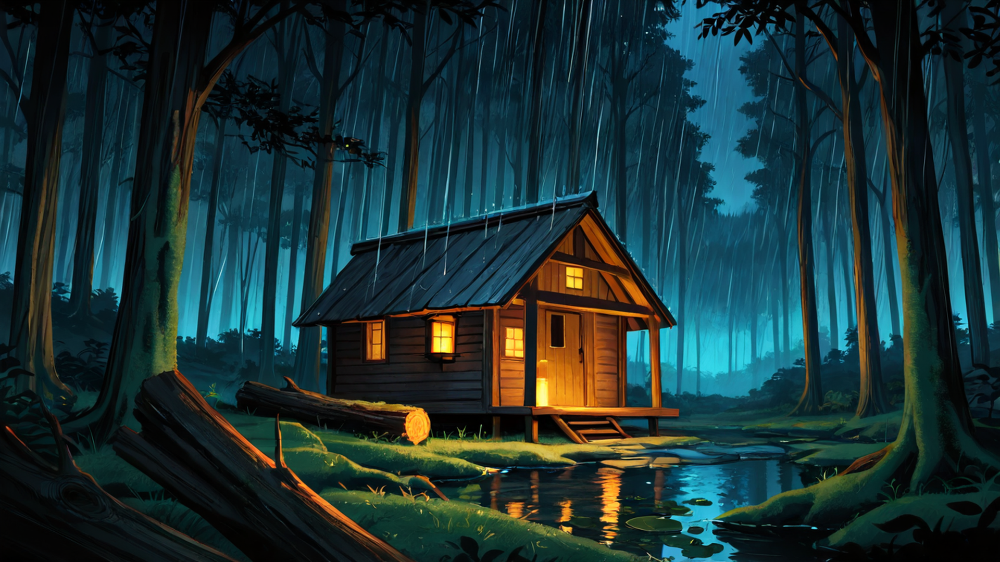

A Tale · 小屋 の 物語
道 を 外れた 者 だけ が、
この 灯り を 見つける。

地図 の 端 が 擦り切れた 頃、 旅人 は 道 を 外れて しまう。 木々 の 影 が 深く なる ほど、 心 の どこか が 静か に ほどけて いく。
もう 戻れ ない、 と 思った その 時 — 葉 の 隙間 から、 ひとつ だけ 灯り が 漏れて いる。 木 の 軋む 音、 暖炉 の 火 の はぜる 音、 雨 の 香り。
扉 を 押す と、 中 に は 誰 も いない。 ただ、 椅子 が ひとつ。 茶 が 一杯。 そして — あなた の ため の 時間 が、 ここ に 用意 されて いる。
— Welcome to the Hollow.